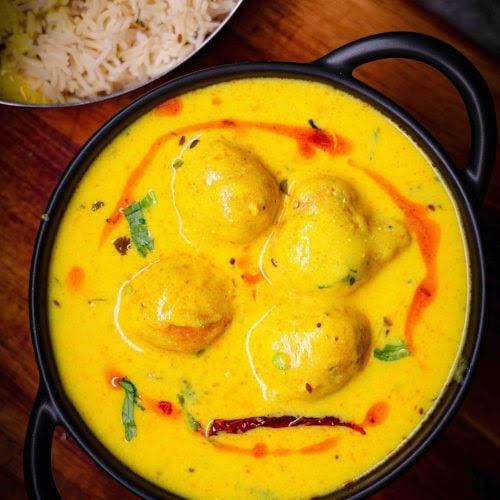

HOME
Kadhi Pakora

**Recipe**
Punjabi Kadhi Pakora is a rich, tangy yogurt and gram flour (besan) curry featuring crispy onion fritters (pakoras) and an aromatic spiced tempering (tadka). It takes about 1 hour to make from start to finish and is best served hot with steamed basmati rice
**Ingredients**
- gram flour
- Onion
- Green chillies
- Carom seeds
- Red powder
- Turmeric
- Water
- Oil
- yougurt
- Fenugreek seeds
- Asafoetida
- Curry leaves
**Steps**
- In a large bowl, whisk the yogurt and \(\frac{1}{4}\) cup of besan together until smooth and completely lump-free.
- Whisk in the turmeric, red chili powder, salt, and 4–5 cups of water.
- Heat 1 tablespoon of oil or ghee in a deep, heavy-bottomed pot. Splutter the mustard seeds, cumin seeds, fenugreek seeds, hing, and dry red chilies. Add curry leaves.
- Pour the whisked yogurt-besan mixture into the pot
- Bring to a gentle boil on medium heat, stirring continuously to prevent the besan from settling.
- Once boiling, reduce the heat to low and let it simmer for 25–30 minutes, stirring occasionally, until it thickens.
- Drop the prepared pakoras into the simmering kadhi and let them cook for another 3–5 minutes so they absorb the curry.
- For the final tempering (tadka), heat a small pan with 1 tbsp of ghee. Add a pinch of red chili powder and immediately pour it over the hot kadhi.